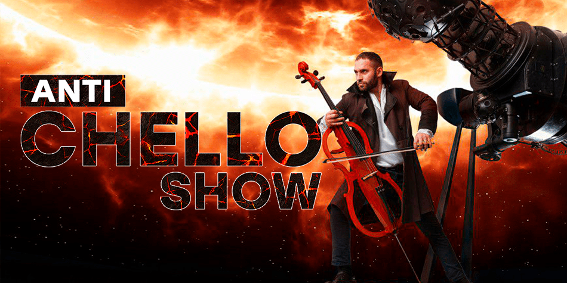

Anti-chello Show

Anti-chello Show в Киеве! Ждем вас 2020-02-12 в 19:30 на площадке Киевский планетарий, Киев.
Вы можете купить билеты на Anti-chello Show на Concert.ua онлайн. А также оформить заказ с доставкой курьером или забрать заказ на фирменных бланках в нашем ближайшем билетном офисе (накануне события эти способы становятся не доступными).
1. Насладиться симбиозом классического звучания и современных жанров музыки
2. Почувствовать мурашки по коже от виртуозного исполнения
3. Увидеть мощное и по-настоящему завораживающее живое выступление
Киевский Планетарий совместно с Eclectic Sound Orchestra представляют ANTI-CHELLO SHOW - уникальный перфоманс инструментальной рок-музыки.
В течение последних 20 лет такой инструмент, как виолончель, сумел отделиться от классической музыки и получить невиданную ранее популярность. Виртуозное исполнение Стасом Фекете авторских произведений буквально уничтожает рамки между музыкальными стилями.
Сет-лист программы ANTI-CHELLO SHOW создан для настоящих меломанов. Симбиоз классического звучания и современных жанров музыки превращаются в мощное и по-настоящему завораживающее живое выступление. Перфоманс становится по-особому ураганным и космическим под сопровождение умопомрачительных проекций на одном из самых масштабных куполов Европы, который находится в Киевском Планетарии.
Музыкально-проекционное действо ANTI-CHELLO SHOW покорит зрителей Киевского Планетария своим драйвом и откроет новое дыхание для инструментальной рок-музыки. Горячие соло и безудержная страсть выполнения Стаса Фекете объединяют такие жанры как рок, транс, эйсид и многое другое, не забывая об истинно большой истории виолончели, как сольного инструмента.
ANTI-CHELLO SHOW - это новый уровень искусства, который рождает музыку перед Вами и вызывает мурашки по коже!
О событии
Anti-chello Show в Киеве! Ждем вас 2020-02-12 в 19:30 на площадке Киевский планетарий, Киев.
Вы можете купить билеты на Anti-chello Show на Concert.ua онлайн. А также оформить заказ с доставкой курьером или забрать заказ на фирменных бланках в нашем ближайшем билетном офисе (накануне события эти способы становятся не доступными).
ПОЧЕМУ СТОИТ ПОЙТИ НА ANTI-CHELLO SHOW?
1. Насладиться симбиозом классического звучания и современных жанров музыки
2. Почувствовать мурашки по коже от виртуозного исполнения
3. Увидеть мощное и по-настоящему завораживающее живое выступление
Киевский Планетарий совместно с Eclectic Sound Orchestra представляют ANTI-CHELLO SHOW - уникальный перфоманс инструментальной рок-музыки.
В течение последних 20 лет такой инструмент, как виолончель, сумел отделиться от классической музыки и получить невиданную ранее популярность. Виртуозное исполнение Стасом Фекете авторских произведений буквально уничтожает рамки между музыкальными стилями.
Сет-лист программы ANTI-CHELLO SHOW создан для настоящих меломанов. Симбиоз классического звучания и современных жанров музыки превращаются в мощное и по-настоящему завораживающее живое выступление. Перфоманс становится по-особому ураганным и космическим под сопровождение умопомрачительных проекций на одном из самых масштабных куполов Европы, который находится в Киевском Планетарии.
Музыкально-проекционное действо ANTI-CHELLO SHOW покорит зрителей Киевского Планетария своим драйвом и откроет новое дыхание для инструментальной рок-музыки. Горячие соло и безудержная страсть выполнения Стаса Фекете объединяют такие жанры как рок, транс, эйсид и многое другое, не забывая об истинно большой истории виолончели, как сольного инструмента.
ANTI-CHELLO SHOW - это новый уровень искусства, который рождает музыку перед Вами и вызывает мурашки по коже!